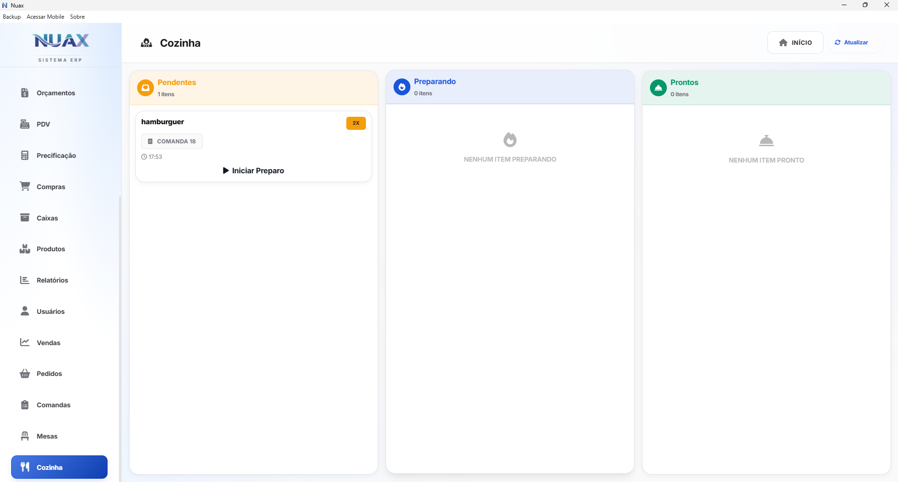

Sua empresa não
para por falta de
internet.
O NUAX instala no seu computador e opera sem internet — na velocidade máxima da sua própria máquina. Backup automático vai direto para o Google Drive, OneDrive ou Dropbox que você já tem. Sem taxa de servidor. Sem dado fora do seu controle.

Operação que não
trava. Nunca.
A internet caiu? Irrelevante. O NUAX roda direto na sua máquina — sem depender de nuvem, sem esperar servidor. Quando a internet voltar, o backup vai automaticamente para o Google Drive, OneDrive ou Dropbox da sua própria conta. Seus dados nunca passam por ninguém.
Testar 30 dias grátisOpera Sem Internet
Venda, emita nota, gerencie estoque e atenda cliente — mesmo com a internet completamente fora. Nenhuma venda perdida por queda de conexão.
Abre em menos de 1 segundo
Cada tela responde na velocidade do seu próprio computador — sem loading, sem esperar servidor, sem depender de conexão.
Seus Dados Ficam com Você
Nenhum dado da sua empresa trafega para servidores de terceiros. Nenhum. Fica na sua máquina — e no backup da sua própria conta de nuvem. Só você acessa.
Banco de dados criptografado
Os arquivos do banco são criptografados. Mesmo que alguém pegue o computador fisicamente, não consegue ler nada dos seus dados.
Interface construída
para velocidade real.
Sem loading, sem espera. Cada tela abre na hora porque tudo roda no seu computador — não num servidor a 1.000 km de distância.

Nunca mais perca
uma venda por queda de internet.
A frente de caixa do NUAX responde em milissegundos — sem loading, sem travamento. A internet caiu? O caixa continua aberto.
- Emissão de cupom não fiscal
- Controle de caixa por operador
- Estoque atualizado automaticamente ao fechar a venda
Saiba exatamente
o que tem e o que falta.
Defina o mínimo de cada produto e o NUAX avisa antes de acabar — sem precisar de internet, sem planilha, sem surpresa na hora da venda.
- Alertas automáticos de estoque mínimo
- Categorização e variações de produto
- Histórico completo de entradas e saídas


Decisões baseadas
em dados, não em achismos.
Dashboards completos gerados aqui no seu computador — sem esperar servidor, sem seus números saindo da sua empresa. Vendas, fluxo de caixa e desempenho em segundos.
- Dashboards de vendas e financeiro
- Exportação para PDF e Excel
- Visão por período, produto e operador
Da comanda ao cliente,
tudo em rede local.
Do pedido na mesa até a entrega — tudo em tempo real, pela sua própria rede local. A cozinha vê os pedidos no KDS instantaneamente. A internet não entra nessa conta.
- Controle de mesas e comandas
- Monitor KDS para cozinha e bar
- Monitor de Finalizado para entrega ao cliente

Teste 30 dias. Não gostou?
Fica no plano grátis. Para sempre.
Se o trial acabar e você decidir não assinar, o NUAX não fecha. Seu acesso muda para o Plano Grátis — com vendas, financeiro e controle de clientes liberados para sempre, sem custo. Nenhuma cobrança, nenhuma surpresa, nenhum dado perdido.
- Cadastro de clientes
- Controle de produtos
- Vendas
- Financeiro
- Usuário
- Máx. 50 clientes
- Máx. 100 produtos
- Todos os módulos incluídos de BASE
- Clientes
- Fornecedores
- Produtos
- Precificação
- Vendas
- Financeiro
- Relatórios
- Usuários
- Compras
- + Modulo do plano escolhido
Comece hoje.
Decida depois.
Em 5 minutos o NUAX está instalado e funcionando no seu computador. Trinta dias de tudo liberado — sem cartão, sem compromisso. Se não ficar, fica no plano grátis. Se ficar, começa em R$39,99 por mês.